El grupo de segundo de secundaria del Instituto Alejandría está formado por
14 estudiantes: 6 mujeres y 8 hombres; presenta dinámicas
pasivo-agresivas recurrentes, principalmente burlas respecto a gustos
personales y comentarios despectivos hacia materias que consideran poco relevantes.
Aunque no todo el grupo participa en estas actitudes, sí influyen en el ambiente
general, generando reportes disciplinarios frecuentes.
En la materia de Español, muestran interés por los contenidos, aunque suelen
no entregar tareas o actividades en tiempo y forma. En este primer
tramo del ciclo se han estudiado varias estructuras textuales a través del
periodismo como eje, usando como base el libro
Periodismo escrito, de Federico Campbell, con énfasis en ética de la
información.
El proyecto Reseñas y columnas surge como un espacio donde el grupo
pueda canalizar sus opiniones —frecuentemente expresadas como quejas espontáneas—
hacia producciones argumentadas, éticas y digitalmente responsables.
Objetivos de aprendizaje
Objetivo general: Elaborar, siguiendo lo aprendido sobre estructuras textuales, una reseña y una columna, presentándolas en formato de audio y video respectivamente, proceso meidiante el cual se espera alcanzar los siguientes objetivos específicos:.
Identificar la estructura y propósito de la reseña y la columna.
Analizar la responsabilidad ética del reseñista y el columnista.
Crear una reseña en formato de audio dentro de VoiceThread.
Comentar críticamente las reseñas de sus compañeros.
Desarrollar una videocolumna argumentada sobre una materia escolar y subirla a VoiceThread.
Distinguir entre queja vacía y crítica sustentada.
Fortalecer la expresión oral y audiovisual mediante herramientas digitales.
Justificación del uso de TIC
En este grupo, dadas las dinámicas que sostienen, se pensó en VoiceThread como herramienta principal debido a que permite integrar imagen, audio, video y comentarios en un solo espacio,
ofreciendo un entorno seguro para la discusión respetuosa. Para un grupo con
tendencias a la burla digital, esta plataforma funciona como un
moderador natural que promueve el pensamiento responsable sobre lo
que se publica en línea.
Por su parte, el uso de Benime, o la cámara, para videocolumnas integra lenguajes audiovisuales
familiares para los estudiantes, aumentando la motivación y canalizando la crítica
habitual hacia prácticas argumentativas formales; además, aunque en ninguno de los dos casos, cámara o Benime, tengan experiencia, ya lograr realizar el ejercicio implica un gran avance para algunos de los integrantes de este grupo.
Selección de herramientas digitales
VoiceThread: Plataforma central para las actividades del proyecto.
Permitió integrar reseñas que combinan imagen ilustrativa y audio leído por cada estudiante,
así como la publicación de videocolumnas, mientras que su sistema de comentarios posibilitó
una interacción respetuosa y guiada, ideal para practicar retroalimentación ética y responsable.
Benime: Herramienta utilizada para producir videocolumnas animadas.
Facilitó que los estudiantes exploraran un formato audiovisual más atractivo,
estructurando sus argumentos mediante narración, imágenes y secuencias animadas,
promoviendo creatividad y claridad discursiva.
Base teórica: Textos de Federico Campbell —
“La reseña” y “La columna” — utilizados como guía conceptual.
Sirvieron para comprender la intención comunicativa, estructura, ética y estilo propios
de cada género periodístico, ofreciendo el fundamento crítico previo a la producción digital.
Secuencia de actividades
Fase 1 — Introducción a la reseña y ética informativa (Sesiones 1 a 3)
Lectura conjunta y guiada del capítulo La reseña, de Federico Campbell.
Discusión ética sobre la información, las cámaras de eco y el impacto de las reseñas en línea.
Análisis de reseñas reales por usuarios de Google para identificar estructura, tono y responsabilidad discursiva.
Primeros ejercicios de redacción en libreta con retroalimentación inmediata.
Resolución de dudas sobre estilo, claridad, argumentación y estructura expositiva.
Fase 2 — Producción de la reseña en VoiceThread (Sesiones 4 a 7)
Revisión grupal de ejemplos modelo y análisis de la lectura teórica trabajada previamente.
Elaboración del texto final de la reseña tras ejercicios previos y asesoría individual.
Preparación para la grabación: dicción, intención comunicativa y lectura en voz alta.
Subida de la imagen representativa del objeto reseñado en VoiceThread.
Grabación del audio leyendo la reseña, enfatizando claridad, entonación y cohesión.
Comentarios obligatorios en los hilos de compañeros siguiendo reglas de retroalimentación ética.
Análisis grupal de resultados: fortalezas, mejoras y observaciones generales.
Fase 3 — Estudio de la columna y preparación argumentativa (Sesiones 8 y 9)
Lectura conjunta del capítulo La columna, de Campbell, y discusión guiada.
Revisión de columnas contemporáneas en prensa digital, identificando intención, postura y estrategias argumentativas.
Ejercicios de escritura: planteamiento del tema, postura personal y estructura argumentativa básica.
Resolución de dudas sobre tono, estilo y construcción de argumentos sólidos.
Fase 4 — Videocolumna: escritura final y presentación (Sesiones 10 a 12)
Asignación del tema: “¿Qué mejorarías de alguna de tus materias?” para fomentar crítica responsable.
Redacción final de la columna considerando los ejercicios previos y la guía docente.
Introducción técnica a Benime, a través de un video elaborado por el docente sobre Manuel Buendía, para quienes opten por animación; orientación para quienes graben en cámara.
Producción de la videocolumna: claridad de mensaje, postura crítica y coherencia argumentativa.
Subida del video a VoiceThread y participación mediante comentarios constructivos.
Selección de videocolumnas representativas para presentarse en Consejo Técnico Escolar.
Implementación
La implementación del proyecto estuvo marcada por diversos factores institucionales, entre ellos las
actividades de preparación para el evento de Halloween escolar, las cuales generaron retrasos significativos
en los tiempos de trabajo previstos. A pesar de ello, se mantuvo el objetivo de consolidar procesos de
escritura guiada, reflexión crítica y ejercicio responsable de la opinión, atendiendo al ritmo real de la
dinámica grupal.
Considerando que el grupo suele presentar dificultades para entregar trabajos en tiempo y forma,
todas las fases de escritura —tanto de reseñas como de columnas— se desarrollaron en el aula. Esto permitió
ofrecer retroalimentación inmediata, correcciones oportunas y acompañamiento constante en aspectos de
cohesión, estructura y argumentación. En algunos casos se solicitaron pequeños avances para el fin de
semana, pero las versiones sustanciales se trabajaron directamente en clase para garantizar un proceso
formativo más sólido.
Desde el inicio se dio énfasis a la importancia de emitir opiniones sustentadas en argumentos y no en
impulsos o emocionalidades momentáneas, particularmente debido a que el grupo presenta dinámicas de burla,
juicio precipitado y reacciones viscerales. La lectura de los textos de Campbell permitió establecer una base
teórica que fortaleció la comprensión de la crítica responsable, lo que se reforzó en clase mediante debates
guiados y análisis de ejemplos.
Durante el proceso, se detectó que tres estudiantes no sabían cómo abrir una cuenta en plataformas básicas como
VoiceThread, a pesar de ser alumnos que usan frecuentemente sus dispositivos para actividades recreativas.
Este hecho evidenció que la brecha digital no responde únicamente a la disponibilidad de recursos materiales,
sino a la falta de alfabetización digital funcional. En este sentido, el proyecto permitió identificar a
aprendientes que requieren orientación específica para utilizar la tecnología como herramienta académica y no
solo como medio de entretenimiento.
En cuanto a la dimensión creativa, la introducción al uso de Benime resultó especialmente motivadora para
los estudiantes. Si bien aún se encuentran en una curva de aprendizaje respecto al manejo técnico de la
herramienta, mostraron interés genuino en seguir utilizándola e incluso expresaron el deseo de integrarla en
trabajos de otras materias. Esto sugiere un potencial significativo para ampliar estrategias de producción
multimedia dentro del currículo.
Finalmente, aunque las videocolumnas elaboradas a través de VoiceThread estaban destinadas a ser
compartidas durante el Consejo Técnico Escolar, la directora de secundaria decidió no presentarlas, señalando
que algunos docentes podrían interpretar las críticas estudiantiles como observaciones personales. Este hecho
evidenció la necesidad de fortalecer no solo la formación ética y crítica del alumnado, sino también la de los
propios docentes, subrayando que el ejercicio argumentativo debe asumirse como oportunidad de mejora y no como
confrontación.
Evidencias visuales de las actividades realizadas
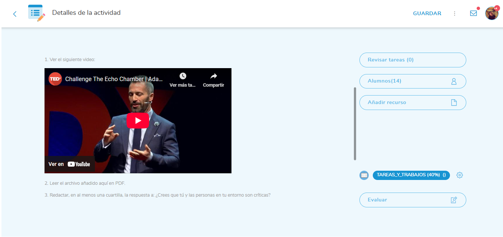
Indicaciones para actividad de reflexión sobre la crítica
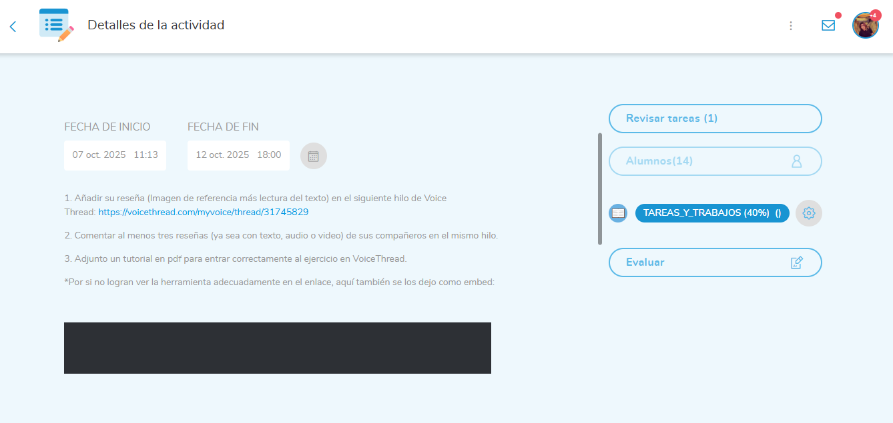
Indicaciones para el uso de Voicethread
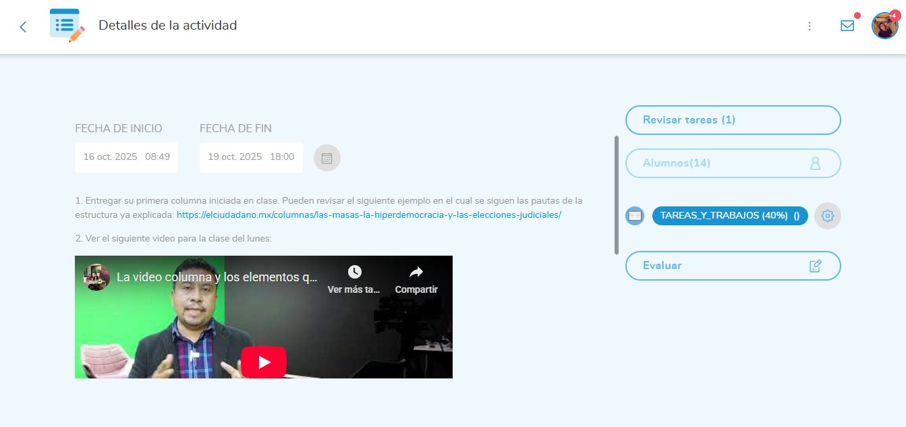
Indicaciones para la realización de la videocolumna
Evidencias de la participación y respuesta de los estudiantes
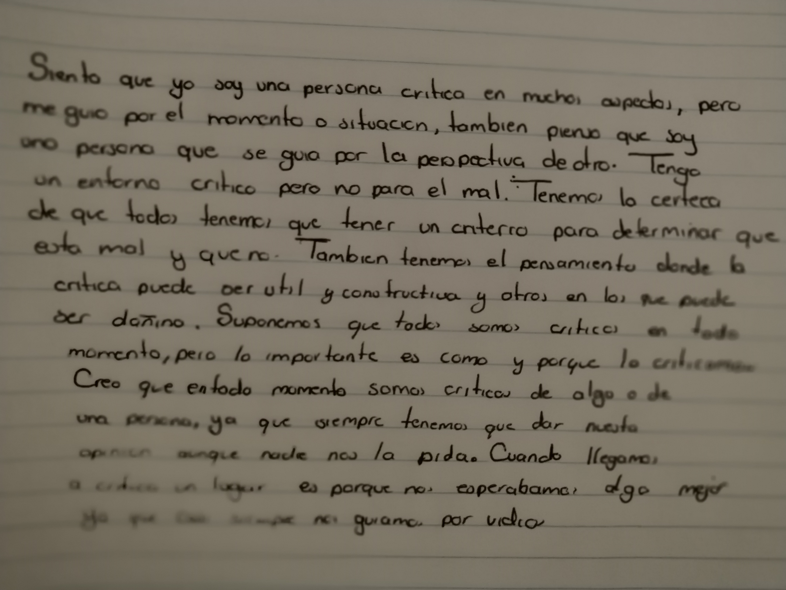
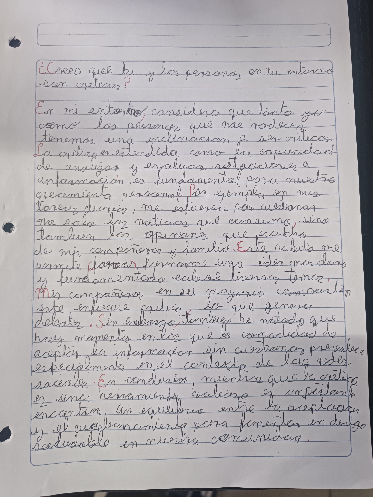
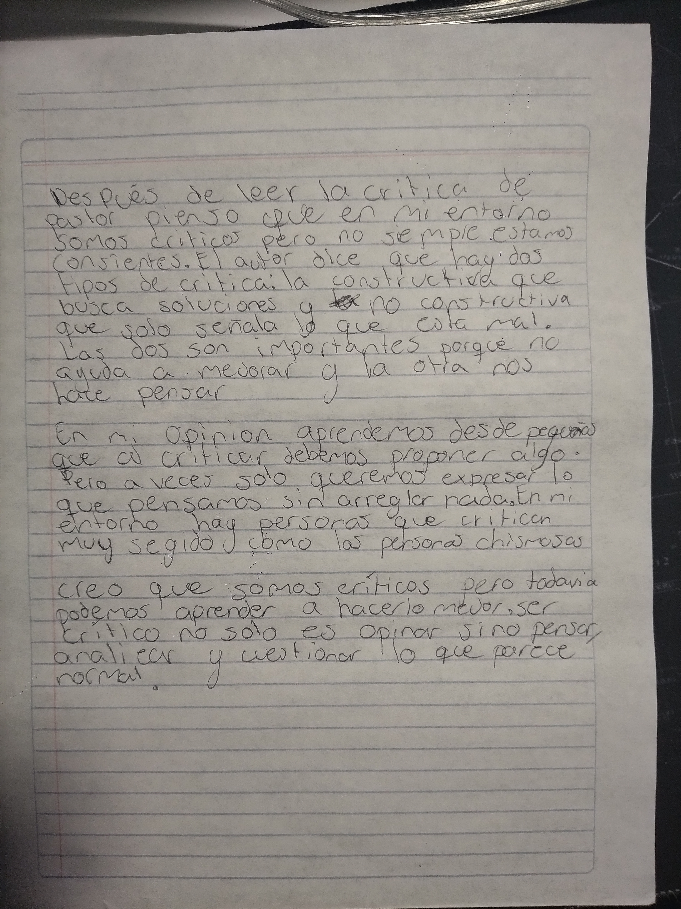
Evidencias del trabajo con reseñas previo a subirlas a VoiceThread
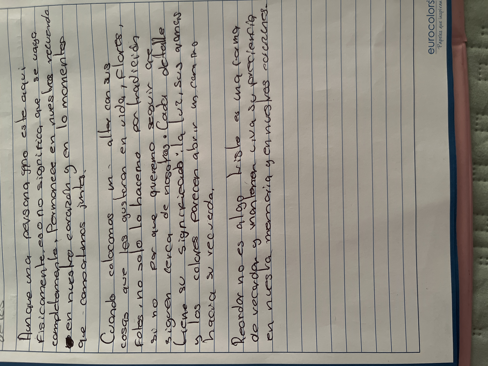
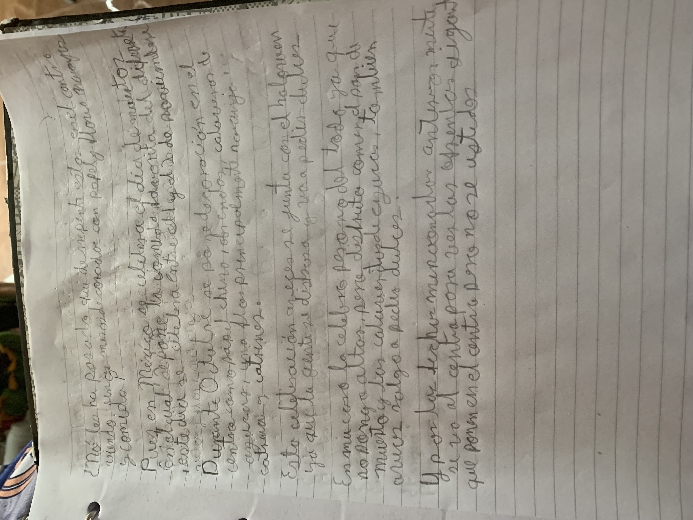
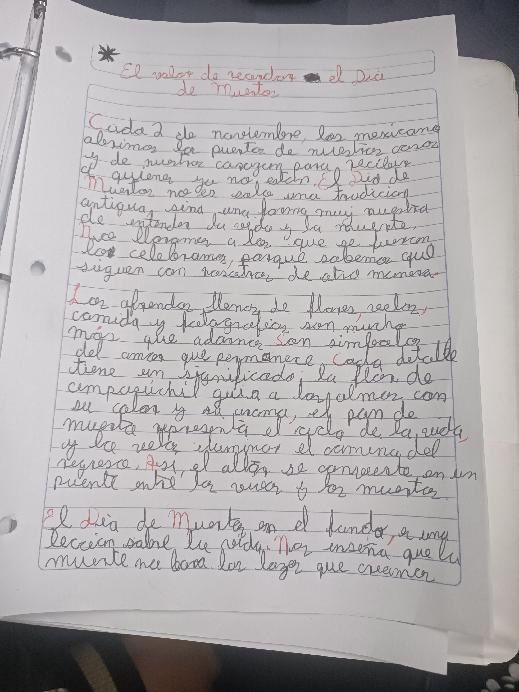
Evidencias del trabajo de videocolumnas previoa a trabajarlas con Benime y VoiceThread
Documentación
Hilo de reseñas en VoiceThread
Hilo de videocolumnas en VoiceThread
Video complementariocomo ejemplo del uso de Benime
Evaluación
El análisis de los productos finales —la reseña en formato audio y la videocolumna elaborada mediante
VoiceThread o Benime— permite identificar avances importantes en el desarrollo
de habilidades argumentativas, éticas y digitales, aunque también evidencia áreas de oportunidad
relacionadas con la responsabilidad en la entrega y la alfabetización digital funcional.
Resultados cuantitativos
1. Reseña en audio (VoiceThread)
Calificación
Número de estudiantes
Observaciones
9–10
5
Excelente dominio del formato, lectura clara y uso pertinente de Campbell.
7–8
4
Estructura funcional pero con detalles a mejorar en cohesión.
0
6
No entregaron, pese a procesos de escritura realizados en clase.
Promedio general: 5.71/10 |
Tasa de no entrega: 42.8%
2. Videocolumna (Benime o grabación)
Calificación
Número de estudiantes
Observaciones
9–10
1
Videocolumna sólida, bien argumentada y con estructura clara.
8
8
Producción adecuada, con ideas coherentes y correcta presentación.
7
3
Cumplen requisitos mínimos aunque con fallas retóricas.
0
2
No entregaron video final.
Promedio general: 6.64/10 |
Tasa de no entrega: 14.2%
Resultados cualitativos
En términos cualitativos, los estudiantes mostraron mejoras visibles en la distinción entre
opinión y juicio argumentado, así como en la capacidad de identificar los elementos éticos
implicados en la producción y consumo de información. Las discusiones en clase permitieron
fortalecer el pensamiento crítico y reconocer la responsabilidad comunicativa dentro y fuera del aula.
Respecto a la competencia digital, se detectó que algunos estudiantes —aunque usuarios constantes de
dispositivos electrónicos— carecen de habilidades básicas como crear cuentas, navegar plataformas o
subir archivos correctamente. Esto permitió identificar la presencia de un tipo de analfabetismo
digital funcional que debe trabajarse de manera explícita.
La segunda actividad (videocolumna) mostró mejores índices de participación, motivados por el uso de
herramientas como Benime, cuyo atractivo visual impulsó el compromiso del grupo. Algunos estudiantes
incluso manifestaron interés en emplear la aplicación en otras asignaturas, lo cual representa un avance
en la integración creativa de TIC.
Instrumentos de evaluación
Rúbrica analítica para reseña escrita y leída en audio.
Rúbrica analítica para videocolumna argumentativa.
Lista de cotejo para entrega en VoiceThread.
Retroalimentación directa durante los ejercicios previos en clase.
Observaciones docentes y notas anecdóticas sobre participación.
Rúbrica de evaluación — Reseña (Audio)
Criterio
0–2
3–4
5–6
7–8
9–10
Estructura
Sin estructura
Ideas sueltas
Partes básicas
Buena estructura
Excelente coherencia
Relación con Campbell
Nula
Mínima
Superficial
Adecuada
Pertinente y sólida
Argumentación
Sin sustento
Débil
Básica
Clara
Sólida y crítica
Lectura oral
Incomprensible
Deficiente
Comprensible
Adecuada
Excelente
Ética de la reseña
Lenguaje inapropiado
Burla
Neutral
Respetuosa
Explícitamente ética
Rúbrica de evaluación — Videocolumna
Criterio
0–2
3–4
5–6
7–8
9–10
Planteamiento
No entrega
Vago
Básico
Claro
Muy articulado
Argumentación
Emocional
Débil
Aceptable
Coherente
Rigurosa
Uso de herramienta digital
No usa
Mínimo
Adecuado
Variado
Creativo e intencional
Lenguaje y tono
Inadecuado
Informal
Neutral
Apropiado
Formal y crítico
Coherencia audiovisual
No entrega
Deficiente
Comprensible
Coherente
Excelente
Espacios para evidencias adicionales
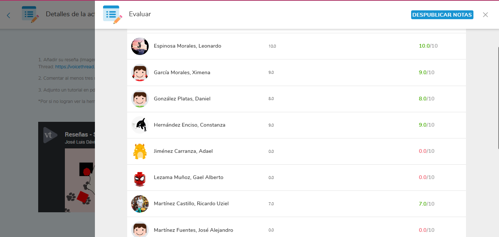
Calificaciones asignadas a las reseñas
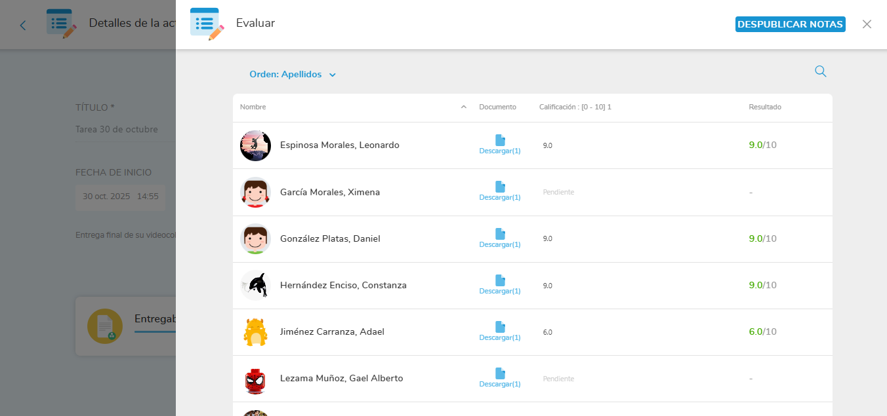
Calificaciones asignadas a las videocolumnas
Reflexión
El proyecto permitió que los estudiantes experimentaran de manera directa la diferencia entre expresar una
opinión impulsiva y construir un juicio crítico sustentado. Aunque los resultados cuantitativos no fueron los
más altos, sí se observó un avance significativo en la comprensión de que las opiniones no deben emitirse a la
ligera, especialmente en un entorno digital donde la información circula con rapidez y puede afectar a otros.
Este aprendizaje, más que cualquier calificación, constituye uno de los logros centrales del proceso.
La práctica constante de lectura, escritura y argumentación dentro del aula contribuyó a fortalecer la
conciencia ética de los estudiantes respecto a la responsabilidad que implica comunicar una postura.
Se hizo evidente que la criticidad no surge de manera espontánea, sino que requiere acompañamiento,
reflexión guiada y espacios seguros donde los alumnos puedan equivocarse y mejorar progresivamente.
Sin embargo, la decisión administrativa de no presentar el hilo de videocolumnas a los docentes constituye
un retroceso en términos formativos. El argumento de que algunos profesores podrían tomar las críticas como
ataques personales refleja un clima institucional donde aún persiste cierta desconfianza hacia el criterio
profesional de los mismos docentes. Este hecho se entrelaza con la percepción de parte del profesorado, que ha
manifestado no comprender por qué el grupo no les cumple como debiera; a mi parecer, esto puede derivar tanto de
actitudes autoritarias como de cierta opacidad en los criterios de evaluación que manejan.
Este episodio evidencia que la formación crítica no es un proceso que deba limitarse al estudiantado;
también interpela a la comunidad docente y a toda la estructura escolar. La capacidad de recibir retroalimentación
argumentada —incluso cuando resulta incómoda— es un componente indispensable para construir prácticas pedagógicas
más abiertas, éticas y coherentes con los principios que buscamos enseñar. En este sentido, el proyecto no solo
reveló áreas de oportunidad en los alumnos, sino también en la cultura escolar que los rodea.